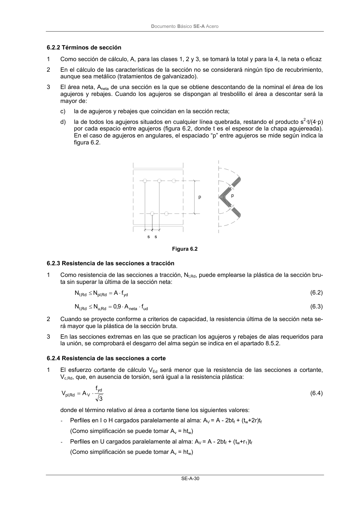
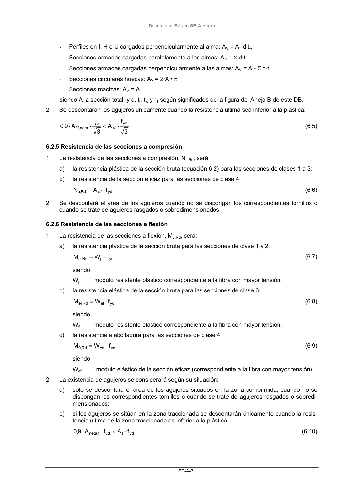

DB-SE-A Acero · edición 2007-10-23 · capa oficial
Documento DB-SE-A-oficial · SHA-256 del PDF 9ed9ea694aabfbda3bfbbef40dfe9223fde05d13c35bc2ba9751e5a96a22a64f
Copia fiel del PDF fuente · Fuente oficial
Ficha de la disposición en la fuente oficial
Formatos: JSON del segmento · Markdown
6.2.4 Resistencia de las secciones a corte 1 El esfuerzo cortante de cálculo VEd será menor que la resistencia de las secciones a cortante, Vc,Rd, que, en ausencia de torsión, será igual a la resistencia plástica: 3 f A V yd V Rd , pl ⋅ = (6.4) donde el término relativo al área a cortante tiene los siguientes valores: - Perfiles en I o H cargados paralelamente al alma: AV = A - 2btf + (tw+2r)tf (Como simplificación se puede tomar Av = htw) - Perfiles en U cargados paralelamente al alma: AV = A - 2btf + (tw+r1)tf (Como simplificación se puede tomar Av = htw) DocumentoBásico SE-A Acero SE-A-31 - Perfiles en I, H o U cargados perpendicularmente al alma: AV = A -d·tw - Secciones armadas cargadas paralelamente a las almas: AV = Σ d·t - Secciones armadas cargadas perpendicularmente a las almas: AV = A - Σ d·t - Secciones circulares huecas: AV = 2·A / π - Secciones macizas: AV = A siendo A la sección total, y d, tf, tw y r1 según significados de la figura del Anejo B de este DB. 2 Se descontarán los agujeros únicamente cuando la resistencia última sea inferior a la plástica: 3 f A 3 f A 9,0 yd V ud neta , V ⋅ < ⋅ ⋅ (6.5)

